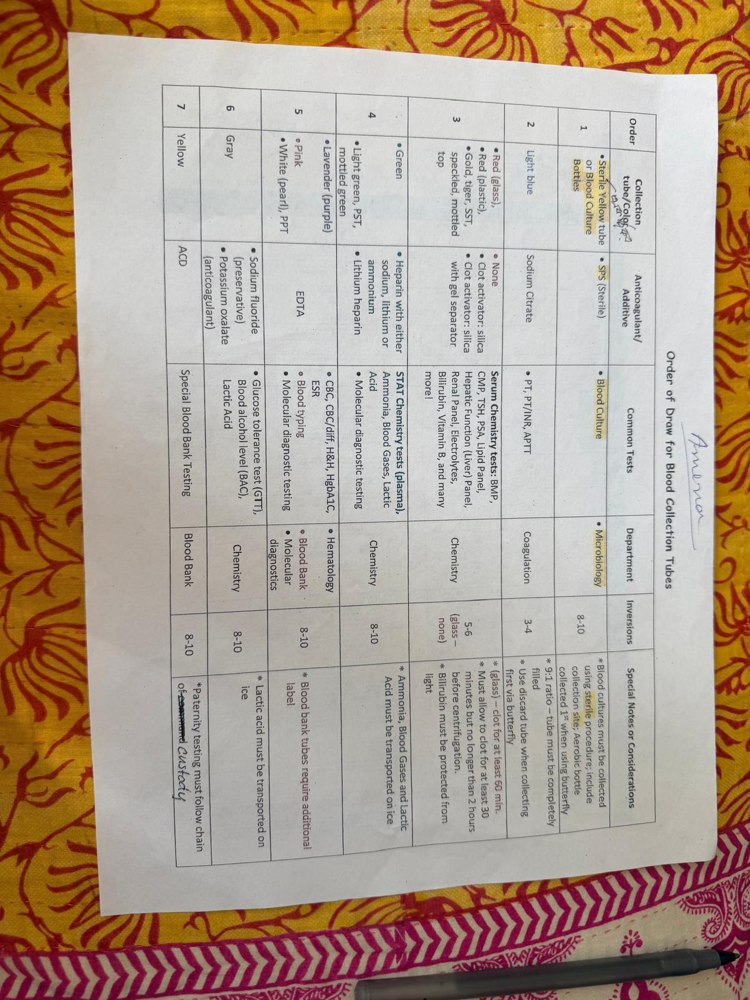
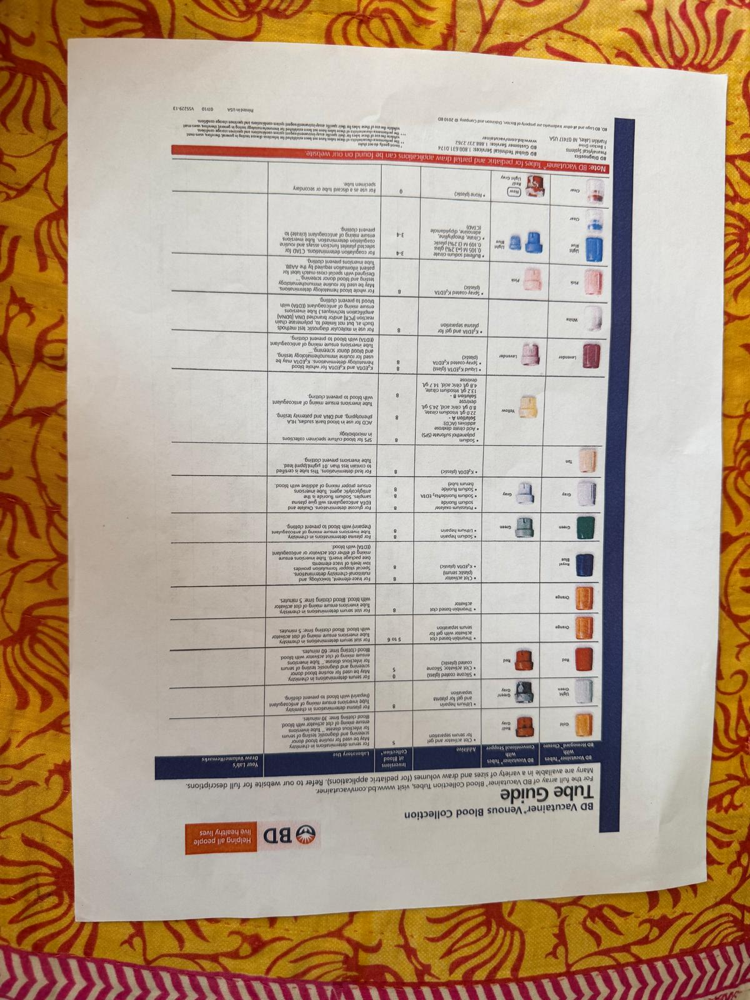
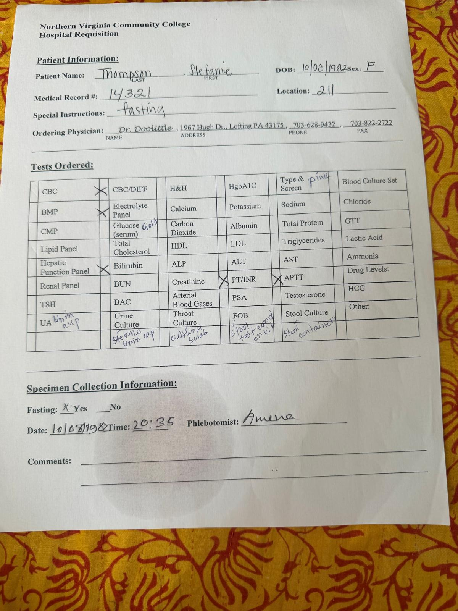
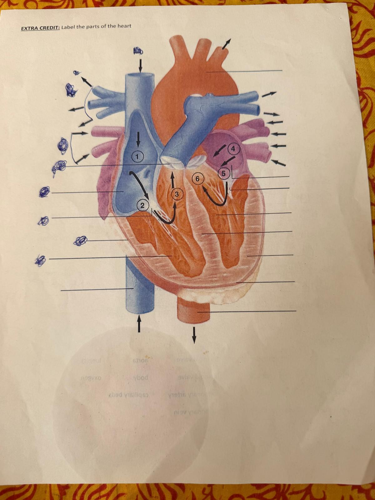
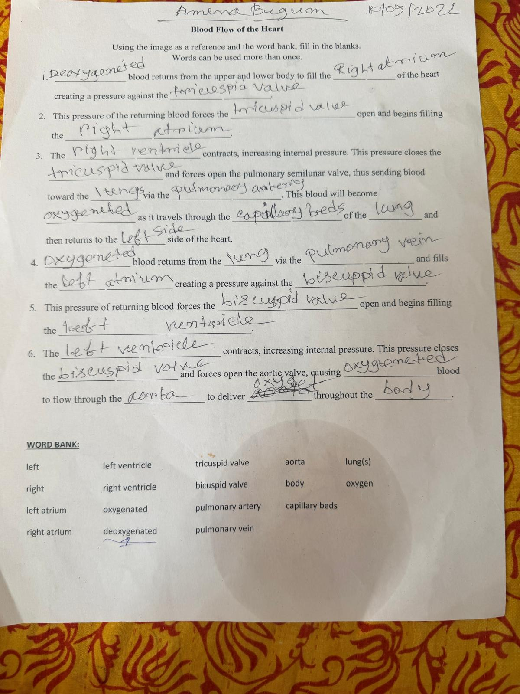

Section 1 — Blood Collection (Order of Draw & Tubes)


Click an image to zoom. Answer based on the charts above.
Section 2 — Blood Tests (from the Hospital Requisition)

Northern Virginia Community College Hospital Requisition. Patient: Thompson, Stefanie. Click to zoom.
Section 3 — Heart Anatomy & Blood Flow (Fill-in-the-Blank)


Numbers 1-6 refer to the labeled points on the heart diagram (left image). Click to zoom.
Word Bank (for the blood-flow blanks):
left · right · left atrium · right atrium · left ventricle · right ventricle ·
oxygenated · deoxygenated · tricuspid valve · bicuspid valve ·
pulmonary artery · pulmonary vein · aorta · body · capillary beds · lung(s) · oxygen